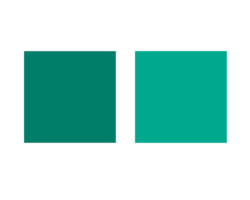

<ion-header>
  <ion-navbar hideBackButton text-center>
    <ion-title>Descrição</ion-title>
  </ion-navbar>
</ion-header>

<ion-content no-scroll class="search-master">
  <div align=center class="search-container">
    <div class="filter-grid">
      <div #firstFocus class="grid-element" (tap)="focus('location')"></div>
      <div class="grid-element" (tap)="focus('gender')"></div>
      <div class="grid-element" (tap)="focus('Espécie')"></div>
      <div class="grid-element" (tap)="focus('race')"></div>
      <div class="grid-element" (tap)="focus('color')"></div>
      <div class="grid-element" (tap)="focus('size')"></div>
      <div class="grid-element" (tap)="focus('hair')"></div>
      <div class="grid-element" (tap)="focus('other')"></div>
    </div>
  </div>
</ion-content>
<ion-content no-scroll class="master-2">
  <div align=center>
    <div class="focus-title">
      <h1>{{focused}}</h1>
    </div>
    <div class="focused">
      <div *ngIf="focused == 'location'" class="location"></div>
      <div *ngIf="focused == 'gender'" class="gender"></div>
      <div *ngIf="focused == 'Espécie'" class="type">
        <div class="type-grid">
          <div class="type-element" (tap)="setType('Cachorro')">
            
            <div *ngIf="type == 'Cachorro'"><p>{{type}}</p></div>
          </div>
          <div class="type-element" (tap)="setType('Gato')">
            
            <div *ngIf="type == 'Gato'"><p>{{type}}</p></div>
          </div>
          <div class="type-element" (tap)="setType('rodent')">
            
            <div *ngIf="type == 'Roedor'"><p>{{type}}</p></div>
          </div>
          <div class="type-element" (tap)="setType('horse')">
            
            <div *ngIf="type == 'Cavalo'"><p>{{type}}</p></div>
          </div>
          <div class="type-element-non-clickable"></div>
          <div class="type-element" (tap)="setType('reptile')">
            
            <div *ngIf="type == 'Réptil'"><p>{{type}}</p></div>
          </div>
          <div class="type-element" (tap)="setType('bird')">
            
            <div *ngIf="type == 'Pássaro'"><p>{{type}}</p></div>
          </div>
          <div class="type-element" (tap)="setType('other')">
            
            <div *ngIf="type == 'Outro'"><p>{{type}}</p></div>
          </div>
        </div>
      </div>
      <div *ngIf="focused == 'race'" class="race"></div>
      <div *ngIf="focused == 'color'" class="color"></div>
      <div *ngIf="focused == 'size'" class="size"></div>
      <div *ngIf="focused == 'hair'" class="hair"></div>
      <div *ngIf="focused == 'other'" class="other"></div>
    </div>
  </div>
</ion-content>

<ion-fab bottom left padding="10dp">
  <button ion-fab (tap)="return()" color="primary">
    <ion-icon name="return-left" size="large" color="secondary"></ion-icon>
  </button>
</ion-fab>
